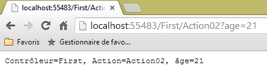
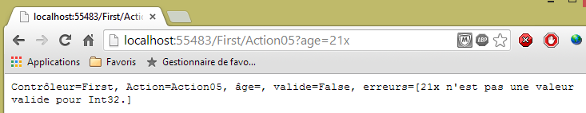
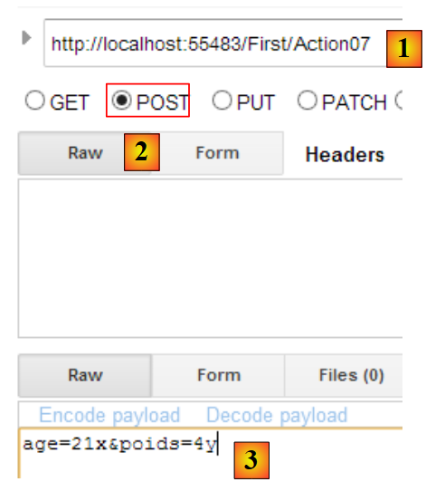
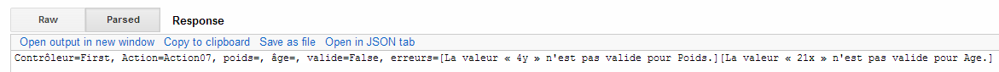
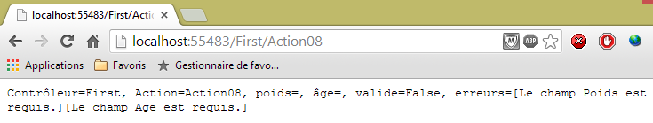
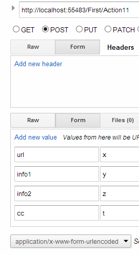
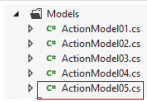

4. El modelo de una acción
Volvamos a la arquitectura de una aplicación ASP.NET MVC:
 |
En el capítulo anterior, vimos el proceso que dirige la petición [1] al controlador y a la acción [2a] que la gestionará, un mecanismo conocido como enrutamiento. También presentamos las diferentes respuestas que una acción puede enviar de vuelta al navegador. Hasta ahora, hemos presentado acciones que no procesaban la petición que se les presentaba. Una petición [1] lleva varias piezas de información que ASP.NET MVC presenta [2a] a la acción en forma de un modelo. Este término no debe confundirse con el M modelo de V vista [2c] que produce la acción:
 |
- la solicitud HTTP del cliente llega a [1];
- en [2], la información contenida en la solicitud se transforma en un modelo de acción [3], a menudo una clase pero no necesariamente, que sirve de entrada a la acción [4];
- en [4], la acción, basándose en este modelo, genera una respuesta. Esta respuesta tiene dos componentes: una vista V [6] y el modelo M de esta vista [5];
- la vista V [6] utilizará su modelo M [5] para generar la respuesta HTTP destinada al cliente.
En el MVC modelo, la acción [4] forma parte de la C (controlador), el modelo de vista [5] es el M, y la vista [6] es la V.
Este capítulo examina los mecanismos para vincular la información transportada por la solicitud -que es inherentemente cadenas- con el modelo de acción, que puede ser una clase con propiedades de varios tipos.
4.1. Inicialización de los parámetros de acción
Añadimos [1] un nuevo proyecto básico ASP.NET MVC a la solución existente:
 |
 |
- en [2], el nombre del nuevo proyecto;
- en [3, 4], seleccionamos un proyecto básico ASP.NET MVC;
- en [5], el nuevo proyecto.
Haremos del nuevo proyecto el proyecto de inicio de la solución.
Como se hizo en la Sección 3.1, creamos un controlador llamado [Primero] [1]:

En este controlador, creamos la siguiente acción [Action01]:
using System.Web.Mvc;
namespace Example_02.Controllers
{
public class FirstController : Controller
{
// Action01
public ContentResult Action01(string name)
{
return Content(string.Format("Controller=First, Action=Action01, name={0}", name));
}
}
}
La novedad está en la línea 8: el método [Action01] tiene un parámetro. En este capítulo exploraremos las diferentes formas de inicializar los parámetros de una acción. El parámetro [nombre] anterior se inicializa en orden con los siguientes valores:
Request.Form["name"] | un parámetro llamado [nombre] enviado por una petición POST |
RouteData.Values["name"] | un elemento URL denominado [nombre] |
Request.QueryString["name"] | un parámetro llamado [nombre] enviado por una petición GET |
Request.Files["name"] | un archivo cargado llamado [nombre] |
Examinemos estos diferentes casos. Introduzcamos el URL [/Primera/Acción01?name=alguien] directamente en el navegador. Obtendremos la siguiente respuesta:

La petición HTTP del navegador era la siguiente:
- Línea 1: La solicitud es un GET. El URL solicitado incluye el parámetro [nombre]. En el lado del servidor, la solicitud se dirige a la acción [Action01], que tiene la siguiente firma:
public ContentResult Action01(string name)
Para asignar un valor al parámetro name, ASP.NET MVC comprueba los siguientes valores en orden: `Request.Form["name"], RouteData.Values["name"], Request.QueryString["name"], Request.Files["name"]se detiene en cuanto encuentra un valor. El parámetro [nombre] incrustado en el GET URL ha sido colocado por el framework en Request.QueryString["name"]. Con este valor [alguien] se inicializará el parámetro [nombre] de [Acción01]. A continuación se ejecuta el código de la [Acción01]:
return Content(string.Format("Controller=First, Action=Action01, name={0}", name), "text/plain", Encoding.UTF8);
Este código proporciona la respuesta enviada al cliente:

Nota: El mecanismo de vinculación de parámetros es distingue entre mayúsculas y minúsculas. Así que si nuestra acción se define como:
public ContentResult Action01(string NAME)
y el parámetro pasado es [?Name=zébulon], la vinculación se producirá igualmente. El parámetro [Nombre] de [Acción01] recibirá el valor [zébulon].
Ahora, vamos a solicitar el mismo URL con un POST. Para ello, utilizaremos la aplicación [Advanced Rest Client]:
 |
- en [1], el URL solicitado;
- en [2], se utilizará el método POST;
- en [3], los parámetros POST.
Enviemos esta petición y veamos los registros de HTTP. La petición HTTP es la siguiente:
 |
- en [1], el POST;
- en [2], los parámetros POST. Técnicamente, se enviaron después de las cabeceras HTTP, tras la línea en blanco que indica el final de dichas cabeceras;
- en [3], la respuesta recibida. Recuperamos con éxito el parámetro [name] del POST. Entre los valores probados para el parámetro name—Request.Form["name"], RouteData.Values["name"], Request.QueryString["name"], Request.Files["name"]-la primera funcionó.
Ahora, vamos a modificar la ruta por defecto en [App_Start/RouteConfig]. Actualmente, esta ruta es la siguiente:
routes.MapRoute(
name: "Default",
url: "{controller}/{action}/{id}",
defaults: new { controller = "Home", action = "Index", id = UrlParameter.Optional }
);
Cambiémoslo a:
routes.MapRoute(
name: "Default",
url: "{controller}/{action}/{name}",
defaults: new { controller = "Home", action = "Index", name = UrlParameter.Optional }
);
- En la línea 3, nombramos el tercer elemento de una ruta [nombre];
- línea 4, este elemento se declara opcional.
Ahora, recompilemos la aplicación y solicitemos el URL [/First/Action01/zébulon] directamente en el navegador. Obtenemos la siguiente respuesta:

Entre los valores probados para el parámetro "nombre—Request.Form["name"], RouteData.Values["name"], Request.QueryString["name"], Request.Files["name"]-el segundo funcionó.
Hagamos la misma petición utilizando una petición POST y [Advanced Rest Client]:
 |
- En [1], asignamos un valor al elemento {nombre} de la ruta;
- en [2], añadimos un parámetro [nombre] a la solicitud enviada;
- la respuesta obtenida se encuentra en [3].
De los valores probados para el parámetro [nombre—Request.Form["name"], RouteData.Values["name"], Request.QueryString["name"], Request.Files["name"]-dos eran válidos: los dos primeros. Se utilizó la primera.
4.2. Validación de parámetros de acción
If an action has a parameter named [p], ASP.NET MVC will attempt to assign one of the following values to it: Request.Form["p"], RouteData.Values["p"], Request.QueryString["p"], or Request.Files["p"]. The first three values are strings. If the [p] parameter is not of type [string], problems may arise.
Creemos la siguiente nueva acción:
// Action02
public ContentResult Action02(int age)
{
string text = string.Format("Controller={0}, Action={1}, age={2}", RouteData.Values["controller"], RouteData.Values["action"], age);
return Content(text, "text/plain", Encoding.UTF8);
}
- Línea 2: La acción [Action02] acepta un parámetro llamado [age] de tipo int. La cadena recuperada debe ser convertible a int.
Vamos a solicitar el URL [http://localhost:55483/First/Action02?age=21]. Obtenemos la siguiente página:

Vamos a solicitar el URL [http://localhost:55483/First/Action02?age=21x]. Obtenemos la siguiente página:

Esta vez, recibimos una página de error. Es interesante observar las cabeceras HTTP enviadas por el servidor en este caso:
- Línea 1: El servidor respondió con un código [500 Internal Server Error] y envió una página HTML (línea 3) de 12.438 bytes (línea 5) para explicar las posibles razones de este error.
Ahora vamos a crear la siguiente acción [Action03]:
// Action03
public ContentResult Action03(int? age)
{
...
}
la [Acción03] es idéntica a la [Acción02] salvo que hemos cambiado el tipo del parámetro [age] a ¿int?, lo que significa entero o null.
Vamos a solicitar el URL [http://localhost:55483/First/Action03?age=21x]. Obtenemos la siguiente página:

ASP.NET MVC no ha podido convertir [21x] en un int tipo. Por lo tanto, asignó el valor null al parámetro [age], tal y como permite su ¿int? tipo. Sin embargo, es posible determinar si el parámetro ha recibido un valor de la solicitud o no.
Creamos la siguiente nueva acción [Action04]:
// Action04
public ContentResult Action04(int? age)
{
bool valid = ModelState.IsValid;
string text = string.Format("Controller={0}, Action={1}, age={2}, valid={3}", RouteData.Values["controller"], RouteData.Values["action"], age, valid);
return Content(text, "text/plain", Encoding.UTF8);
}
- Línea 2: Hemos mantenido el tipo [int?]. Esto permite específicamente que la petición omita el parámetro [age], que recibe entonces el tipo null valor;
- línea 4: comprobamos si el modelo de acción es válido. El modelo de acción está formado por todos sus parámetros, en este caso [edad]. El modelo es válido si todos los parámetros han podido obtener un valor de la solicitud o la null si el tipo de parámetro lo permite;
- Línea 5: Añadimos el valor de la variable [valid] al texto enviado al cliente.
Vamos a solicitar el URL [http://localhost:55483/First/Action04?age=21x]. Obtenemos la siguiente página:

ASP.NET MVC no pudo convertir [21x] a tipo int. Por lo tanto, asignó el valor null al parámetro [age], tal y como permite su ¿int? tipo. Sin embargo, se han producido errores de conversión, como muestra el valor de [válido].
Es posible obtener el mensaje de error asociado a una conversión fallida. Examinemos la nueva acción siguiente:
// Action05
public ContentResult Action05(int? age)
{
string errors = getErrorMessagesFor(ModelState);
string text = string.Format("Controller={0}, Action={1}, age={2}, valid={3}, errors={4}", RouteData.Values["controller"], RouteData.Values["action"], age, ModelState.IsValid, errors);
return Content(text, "text/plain", Encoding.UTF8);
}
La nueva función está en la línea 4. Aquí, llamamos a un método privado [getErrorMessagesFor] y le pasamos el estado del modelo de la acción. Devuelve una cadena que contiene todos los mensajes de error que se han producido. Este método es el siguiente:
private string getErrorMessagesFor (ModelStateDictionary state)
{
List<String> errors = new List<String>();
string messages = string.Empty;
if (!state.IsValid)
{
foreach (ModelState modelState in state.Values)
{
foreach (ModelError error in modelState.Errors)
{
errors.Add(getErrorMessageFor(error));
}
}
foreach (string message in errors)
{
messages += string.Format("[{0}]", message);
}
}
return messages;
}
- línea 1: el parámetro [ModelState] real pasado al método es de tipo [ModelStateDictionary];
- línea 3: una lista de mensajes de error, inicialmente vacía;
- línea 5: comprobamos si el estado pasado como parámetro es válido o no. Si no lo es, entonces agregaremos todos los mensajes de error en una sola cadena;
- línea 7: el tipo [ModelStateDictionary] tiene una propiedad [Values], que es una colección de tipos [ModelState]. Hay un [ModelState] por elemento del modelo. Por ejemplo:
- ModelState["age"]: el estado modelo de la acción para el parámetro [edad],
- ModelState["age"].Errors: la colección de errores para este parámetro. Los errores son de tipo [ModelError],
- ModelState["age"].Errors[i].ErrorMessage: el mensaje de error (si lo hay) para el parámetro [edad] del modelo
- ModelState["age"].Errors[i].Exception: la excepción para el error #i en la colección de errores para el parámetro [age],
- ModelState["age"].Errors[i].Exception.InnerException: la causa de esta excepción,
- ModelState["age"].Errors[i].Exception.InnerException.Message: el mensaje de la causa de la excepción;
- línea 9: iteramos a través de la colección [Errors] de un [ModelState] específico;
- línea 11: recuperar el mensaje de error de un [ModelError] específico y añadirlo a la lista de mensajes de error de la línea 3;
- líneas 14-17: los elementos de la lista de mensajes de error se concatenan en una sola cadena.
El método [getErrorMessageFor] de la línea 11 es el siguiente:
private string getErrorMessageFor(ModelError error)
{
if (error.ErrorMessage != null && error.ErrorMessage.Trim() != string.Empty)
{
return error.ErrorMessage;
}
if (error.Exception != null && error.Exception.InnerException == null && error.Exception.Message != string.Empty)
{
return error.Exception.Message;
}
if (error.Exception != null && error.Exception.InnerException != null && error.Exception.InnerException.Message != string.Empty)
{
return error.Exception.InnerException.Message;
}
return string.Empty;
}
- Línea 1: Recibimos un tipo [ModelError] que encapsula un error en uno de los elementos del modelo de la acción. Recuperamos el mensaje de error desde tres ubicaciones diferentes:
- en [ModelError].ErrorMessage, líneas 3-6;
- en [ModelError].Exception.Message, líneas 7-10;
- en [ModelError].Exception.InnerException.Message, líneas 11-14;
Durante las pruebas, observamos que el mensaje de error se encuentra en estos tres lugares en función de la naturaleza del elemento del modelo. Debe existir una regla que garantice que podemos obtener el mensaje de error asociado a un elemento del modelo, pero no la conozco. Así que lo busco en los distintos lugares donde puedo encontrarlo, siguiendo un orden concreto. En cuanto se encuentra un mensaje no vacío, se devuelve.
Vamos a solicitar el URL [http://localhost:55483/First/Action05?age=21x]. Obtenemos la siguiente página:

4.3. Una acción con varios parámetros
Considere la siguiente nueva acción:
// Action06
public ContentResult Action06(double? weight, int? age)
{
string errors = getErrorMessagesFor(ModelState);
string text = string.Format("Controller={0}, Action={1}, weight={2}, age={3}, valid={4}, errors={5}", RouteData.Values["controller"], RouteData.Values["action"], weight, age, ModelState.IsValid, errors);
return Content(text, "text/plain", Encoding.UTF8);
}
- Línea 2: Tenemos dos parámetros [peso] y [edad].
Las reglas descritas anteriormente se aplican ahora a ambos parámetros. He aquí algunos ejemplos de ejecución:


4.4. Utilizar una clase como modelo de acción
Vamos a definir una clase que servirá de modelo para una acción. La colocaremos en la carpeta [Models] [1].
 |
Su código será el siguiente:
namespace Example_02.Models
{
public class ActionModel01
{
public double? Weight { get; set; }
public int? Age { get; set; }
}
}
Nuestra clase tiene como propiedades automáticas los dos parámetros [Peso] y [Edad] comentados anteriormente. Esta clase será el parámetro de entrada de la acción [Action07]:
// Action07
public ContentResult Action07(ActionModel01 model)
{
string errors = getErrorMessagesFor(ModelState);
string text = string.Format("Controller={0}, Action={1}, weight={2}, age={3}, valid={4}, errors={5}", RouteData.Values["controller"], RouteData.Values["action"], model.Weight, model.Age, ModelState.IsValid, errors);
return Content(text, "text/plain", Encoding.UTF8);
}
- Línea 2: El modelo de acción es una instancia de tipo [ActionModel01].
Volvamos a los dos ejemplos anteriores:


Tenga en cuenta que la vinculación de parámetros no distingue entre mayúsculas y minúsculas. Los parámetros de la petición eran [edad] y [peso]. Han rellenado las propiedades [Edad] y [Peso] de la clase [ModelAction01].
Además, hasta ahora hemos utilizado peticiones [GET] HTTP. Demostremos que las peticiones [POST] se comportan de la misma manera. Para ello, volvamos a utilizar la aplicación [Advanced Rest Client]:
 |
- en [1], el URL solicitado;
- en [2], se enviará mediante una petición POST;
- en [3], los parámetros POST.
Obtenemos la misma respuesta que con la solicitud GET:

4.5. Modelo de acción con restricciones de validación - 1
Utilizando el modelo anterior:
namespace Example_02.Models
{
public class ActionModel01
{
public double? Weight { get; set; }
public int? Age { get; set; }
}
}
Los parámetros [peso] y [edad] pueden omitirse en la solicitud. En este caso, las propiedades [Peso] y [Edad] se establecen en [null] y no se notifica ningún error. Es posible que desee transformar el modelo de la siguiente manera:
namespace Example_02.Models
{
public class ActionModel01
{
public double Weight { get; set; }
public int Age { get; set; }
}
}
Líneas 5 y 6: las propiedades [Peso] y [Edad] ya no pueden tener el valor [null]. Veamos qué ocurre con este nuevo modelo cuando faltan los parámetros [peso] y [edad] en la solicitud.

No hubo errores, y las propiedades [Peso] y [Edad] conservaron su valor de inicialización: 0. ASP.NET MVC:
- creó una instancia del modelo utilizando `nuevo ActionModel01`. Aquí es donde a las propiedades [Peso] y [Edad] se les asignó el valor 0;
- no asignó ningún valor a estas dos propiedades porque no había parámetros con esos nombres.
El primer modelo permite comprobar la ausencia de un parámetro: la propiedad correspondiente tiene entonces el valor [null]. El segundo no lo permite. Es posible añadir restricciones de validación más allá del simple tipo de los parámetros. A continuación las presentamos.
Considere el siguiente nuevo modelo de acción:

using System.ComponentModel.DataAnnotations;
namespace Example_02.Models
{
public class ActionModel02
{
[ Required ]
[Range(1, 200)]
public double? Weight { get; set; }
[Required]
[Range(1, 150)]
public int Age { get; set; }
}
}
- línea 6: indica que el campo [Peso] es obligatorio;
- línea 7: indica que el campo [Peso] debe estar en el intervalo [1.200];
- línea 9: indica que el campo [Edad] es obligatorio;
- línea 7: indica que el campo [Edad] debe estar dentro del intervalo [1,150];
La acción que utilizará esta plantilla será la siguiente [Action08]:
// Action08
public ContentResult Action08(ActionModel02 model)
{
string errors = getErrorMessagesFor(ModelState);
string text = string.Format("Controller={0}, Action={1}, weight={2}, age={3}, valid={4}, errors={5}", RouteData.Values["controller"], RouteData.Values["action"], model.Weight, model.Age, ModelState.IsValid, errors);
return Content(text, "text/plain", Encoding.UTF8);
}
- Línea 2: La acción recibe una instancia del modelo [ActionModel02];
Hagamos algunas pruebas:



Los errores se detectan correctamente. Ahora, actualicemos el modelo de la siguiente manera:
using System.ComponentModel.DataAnnotations;
namespace Example_02.Models
{
public class ActionModel02
{
[Required]
[Range(1, 200)]
public double Weight { get; set; }
[Required]
[Range(1, 150)]
public int Age { get; set; }
}
}
Líneas 8 y 11: las propiedades ya no pueden tener el valor [null]. Compilemos y ejecutemos de nuevo la prueba sin parámetros:

La ausencia de parámetros hizo que las propiedades [Peso] y [Edad] conservaran el valor que adquirieron al instanciar el modelo: 0. Validación entonces se produce. El atributo [Obligatorio] se cumple. Podemos ver que el mensaje de error anterior corresponde al atributo [Range]. Por lo tanto, para comprobar la presencia de un parámetro, la propiedad asociada debe ser anulable, i.e., debe poder aceptar el valor null.
Volvamos al modelo inicial [ActionModel02] y consideremos una acción cuyo modelo consiste en una instancia [ActionModel02] y una instancia anulable [DateTime] tipo:
// Action09
public ContentResult Action09(ActionModel02 model, DateTime? date)
{
string errors = getErrorMessagesFor(ModelState);
string text = string.Format("Controller={0}, Action={1}, weight={2}, age={3}, date={4}, valid={5}, errors={6}", RouteData.Values["controller"], RouteData.Values["action"], model.Weight, model.Age, date, ModelState.IsValid, errors);
return Content(text, "text/plain", Encoding.UTF8);
}
Hagamos algunas pruebas:

No pasamos ningún parámetro a la acción. Los atributos [Requerido] en las propiedades [Peso] y [Edad] hicieron su trabajo. La fecha, sin embargo, recibió el atributo null y no se notificaron errores.
Ahora pasemos parámetros no válidos:

Ahora pasemos valores válidos:

Examinemos otras restricciones de validación. El nuevo modelo de acción es el siguiente:

using System.ComponentModel.DataAnnotations;
namespace Example_02.Models
{
public class ActionModel03
{
[Required(ErrorMessage = "The email parameter is required")]
[EmailAddress(ErrorMessage = "The email parameter is not in a valid format")]
public string Email { get; set; }
[Required(ErrorMessage = "The day parameter is required")]
[RegularExpression(@"^\d{1,2}$", ErrorMessage = "The day parameter must be 1 or 2 digits")]
public string Day { get; set; }
[Required(ErrorMessage = "The info1 parameter is required")]
[MaxLength(4, ErrorMessage = "The info1 parameter cannot be longer than 4 characters")]
public string Info1 { get; set; }
[Required(ErrorMessage = "The info2 parameter is required")]
[MinLength(2, ErrorMessage = "The info2 parameter must be at least 2 characters long")]
public string Info2 { get; set; }
[Required(ErrorMessage = "The info3 parameter is required")]
[MinLength(4, ErrorMessage = "The info3 parameter must be exactly 4 characters long")]
[MaxLength(4, ErrorMessage = "The info3 parameter must be exactly 4 characters long")]
public string Info3 { get; set; }
}
}
- línea 6: el atributo [Required], esta vez con un mensaje de error que definimos nosotros mismos;
- línea 7: el atributo [EMailAddress] requiere que el campo [Email] contenga una dirección de correo electrónico válida;
- línea 11: el atributo [RegularExpression] requiere que el campo [Día] contenga una cadena de uno o dos dígitos. El primer parámetro es la expresión regular que debe validar el campo;
- línea 15: el atributo [MaxLength] requiere que el campo [Info1] no tenga más de 4 caracteres;
- línea 19: el atributo [MinLength] requiere que el campo [Info2] tenga al menos 2 caracteres;
- líneas 23-24: los atributos combinados [MaxLength] y [MinLength] requieren que el campo [Info3] tenga exactamente 4 caracteres;
La acción [Acción10] utilizará esta plantilla:
// Action10
public ContentResult Action10(ActionModel03 model)
{
string errors = getErrorMessagesFor(ModelState);
string text = string.Format("email={0}, day={1}, info1={2}, info2={3}, info3={4}, errors={5}",
model.Email, model.Day, model.Info1, model.Info2, model.Info3, errors);
return Content(text, "text/plain", Encoding.UTF8);
}
Hagamos algunas pruebas con esta acción.
Primero, sin parámetros:

Entonces con parámetros no válidos:

Entonces con parámetros válidos:

4.6. Modelo de acción con restricciones de validez - 2
Introducimos restricciones de integridad adicionales. El nuevo modelo de acción será la siguiente clase [ActionModel04]:
 |
using System.ComponentModel.DataAnnotations;
namespace Example_02.Models
{
public class ActionModel04
{
[Required(ErrorMessage="The url parameter is required")]
[Url(ErrorMessage="Invalid URL")]
public string Url { get; set; }
[Required(ErrorMessage = "The info1 parameter is required")]
public string Info1 { get; set; }
[Required(ErrorMessage = "The info2 parameter is required")]
[Compare("Info1", ErrorMessage = "The info1 and info2 parameters must be identical")]
public string Info2 { get; set; }
[Required(ErrorMessage = "The cc parameter is required")]
[CreditCard(ErrorMessage = "The cc parameter is not a valid credit card number")]
public string Cc { get; set; }
}
}
- línea 8: requiere que el campo anotado sea un URL válido;
- línea 13: requiere que las propiedades [Info1] e [Info2] tengan el mismo valor;
- línea 16: requiere que el campo anotado sea un número de tarjeta de crédito válido.
La acción utilizando esta plantilla será la siguiente:
// Action11
public ContentResult Action11(ActionModel04 model)
{
string errors = getErrorMessagesFor(ModelState);
string text = string.Format("URL={0}, Info1={1}, Info2={2}, CC={3}, errors={4}",
model.Url, model.Info1, model.Info2, model.Cc, errors);
return Content(text, "text/plain", Encoding.UTF8);
}
Para probar la acción [Action11], utilizamos la aplicación [Advanced Rest Client]:
 |
- en [1], el URL de la acción [Action11];
- en [2], este URL se solicitará con un POST;
- en [3], seleccione la ficha [Formulario];
- en [4], los valores de los cuatro parámetros esperados. Esta inicialización es una característica proporcionada por [ARC]. Los parámetros realmente enviados pueden verse en la pestaña [Raw] [5];
 |
- en [6], los parámetros POST.
For this request, we receive the following response:

Pasemos parámetros no válidos:

A continuación, obtenemos la siguiente respuesta:

4.7. Modelo de acción con restricciones de validez - 3
A veces, las restricciones de integridad disponibles no son suficientes. En ese caso, puedes crear las tuyas propias. En concreto, puedes utilizar un modelo que implemente la interfaz [IValidatableObject]. En este caso, añades tus propias validaciones de modelo al método [Validate] de esta interfaz. Veamos un ejemplo. El nuevo modelo de acción será la siguiente clase [ActionModel05]:
 |
using System.Collections.Generic;
using System.ComponentModel.DataAnnotations;
namespace Example_02.Models
{
public class ActionModel05 : IValidatableObject
{
[Required(ErrorMessage = "The rate parameter is required")]
public double? Rate { get; set; }
public IEnumerable<ValidationResult> Validate(ValidationContext validationContext)
{
List<ValidationResult> results = new List<ValidationResult>();
bool ok = Rate < 4.2 || Rate > 6.7;
if (!ok)
{
results.Add(new ValidationResult("The rate parameter must be < 4.2 or > 6.7", new string[] { "Rate" }));
}
return results;
}
}
}
- línea 6: el modelo implementa la interfaz [IValidatableObject];
- línea 10: el método [Validate] de esta interfaz. Devuelve una colección de elementos de tipo [ValidationResult]. Este tipo encapsula los errores a reportar;
- línea 9: una tasa válida es una tasa <4,2 o > 6,7;
- línea 12: creamos una lista vacía de elementos de tipo [ValidationResult];
- línea 13: comprobamos la validez de la propiedad [Rate];
- líneas 14-17: si la propiedad [Rate] no es válida, se añade un elemento de tipo [ValidationResult] a la lista de resultados. El primer parámetro es un mensaje de error. El segundo parámetro, que es opcional, es una colección de las propiedades afectadas por este error.
La acción utilizando este modelo será la siguiente:
// Action12
public ContentResult Action12(ActionModel05 model)
{
string errors = getErrorMessagesFor(ModelState);
string text = string.Format("rate={0}, errors={1}", model.Rate, errors);
return Content(text, "text/plain", Encoding.UTF8);
}
He aquí un ejemplo de ejecución:

4.8. Modelo de acción de tipo Tabla o Lista
Considere la siguiente acción [Acción13]:
// Action13
public ContentResult Action13(string[] data)
{
string strData = "";
if (data != null && data.Length != 0)
{
strData = string.Join(",", data);
}
string text = string.Format("data=[{0}]", strData);
return Content(text, "text/plain", Encoding.UTF8);
}
- Línea 2: El modelo de acción consiste en un array de [cadena]. Nos permite recuperar un parámetro llamado [data], que puede aparecer varias veces en los parámetros de la petición, como en [?data=data1&data=data2&data=data3]. Los distintos parámetros [data] de la solicitud rellenarán la matriz [data] del modelo de acción. Este escenario ocurre con las listas desplegables. El navegador envía entonces los diferentes valores seleccionados por el usuario, todos con el mismo nombre de parámetro.
He aquí un ejemplo:

El modelo también puede ser una lista:
// Action14
public ContentResult Action14(List<int> data)
{
string errors = getErrorMessagesFor(ModelState);
string strData = "";
if (data != null && data.Count != 0)
{
strData = string.Join(",", data);
}
string text = string.Format("data=[{0}], errors=[{1}]", strData, errors);
return Content(text, "text/plain", Encoding.UTF8);
}
El modelo aquí es una lista de enteros (línea 2). Aquí está la primera ejecución:

y una segunda:

4.9. Filtrar un modelo de acción
A veces tenemos un modelo pero queremos que sólo ciertos elementos del modelo sean inicializados por la petición HTTP. Considere el siguiente modelo de acción [ActionModel06]:
using System.ComponentModel.DataAnnotations;
using System.Web.Mvc;
namespace Example_02.Models
{
[Bind(Exclude = "Info2")]
public class ActionModel06
{
[Required(ErrorMessage = "The [info1] parameter is required")]
public string Info1 { get; set; }
public string Info2 { get; set; }
}
}
- líneas 9-10: el parámetro [info1] es obligatorio;
- línea 6: el parámetro [info2] de la línea 12 se excluye de la vinculación de la petición HTTP a su modelo.
La acción será la siguiente [Acción15]:
// Action15
public ContentResult Action15(ActionModel06 model)
{
string errors = getErrorMessagesFor(ModelState);
string text = string.Format("valid={0}, info1={1}, info2={2}, errors={3}", ModelState.IsValid, model.Info1, model.Info2, errors);
return Content(text, "text/plain", Encoding.UTF8);
}
He aquí un ejemplo de ejecución:
 |
- en [1]: pasamos el parámetro [info2] en el URL;
- en [2]: la propiedad [Info2] del modelo de acción permanece vacía.
4.10. Ampliación del modelo de enlace de datos
Volvamos a la arquitectura de ejecución de una acción:
 |
La clase action se instancia al inicio de la petición del cliente y se destruye al final de la misma. Por lo tanto, no puede ser utilizada para almacenar datos entre peticiones, incluso si es llamada repetidamente. Es posible que desee almacenar dos tipos de datos:
- datos compartida por todos los usuarios de la aplicación web. Por lo general, se trata de datos de sólo lectura. Se utilizan tres archivos para implementar este intercambio de datos:
- [Web.Config]: el archivo de configuración de la aplicación
- [Global.asax, Global.asax.cs]: permiten definir una clase, denominada clase global de la aplicación, cuyo tiempo de vida es el de la aplicación, así como manejadores para determinados eventos de esa misma aplicación.
La clase de aplicación global permite definir los datos que estarán disponibles para todas las solicitudes de todos los usuarios.
- datos compartidos entre solicitudes del mismo cliente. Estos datos se almacenan en un objeto denominado a Sesión. Nos referimos a esto como la sesión del cliente para indicar la memoria del cliente. Todas las peticiones de un cliente tienen acceso a esta sesión. Pueden almacenar y leer información allí.
 |
Arriba mostramos los tipos de memoria a los que tiene acceso una acción:
- la memoria de la aplicación, que en su mayor parte contiene datos de sólo lectura y es accesible a todos los usuarios;
- la memoria de un usuario específico, o sesión, que contiene datos de lectura/escritura y es accesible a sucesivas peticiones de el mismo usuario;
- no mostrada anteriormente, existe una memoria de petición, o contexto de petición. La solicitud de un usuario puede ser procesada por varias acciones sucesivas. El contexto de solicitud permite a la acción 1 pasar información a la acción 2.
Veamos un primer ejemplo que ilustra estos distintos tipos de memoria:
En primer lugar, modificamos el fichero [Web.config] del proyecto [Ejemplo-02] de la siguiente manera:
<appSettings>
<add key="webpages:Version" value="2.0.0.0" />
...
<add key="appInfo1" value="appInfo1"/>
</appSettings>
Añadimos la línea 4, que asocia el valor [infoAppli1] a la clave [infoAppli1]. Estos serán nuestros datos de ámbito [Aplicación]: serán accesibles a todas las peticiones de todos los usuarios.
Next, we modify the [Application_Start] method in the [Global.asax] file. This method runs once when the application starts. This is where we need to use the [Web.config] file:
protected void Application_Start()
{
AreaRegistration.RegisterAllAreas();
WebApiConfig.Register(GlobalConfiguration.Configuration);
FilterConfig.RegisterGlobalFilters(GlobalFilters.Filters);
RouteConfig.RegisterRoutes(RouteTable.Routes);
BundleConfig.RegisterBundles(BundleTable.Bundles);
// Initialize application
Application["infoApp1"] = ConfigurationManager.AppSettings["infoApp1"];
}
Añadimos la línea 10. Hace dos cosas:
- recupera el valor de la clave [infoAppli1] del archivo [Web.config] mediante la función [System.Configuration.ConfigurationManager] clase;
- lo almacena en el diccionario [HttpApplication.Application], asociado a la clave [infoAppli1]. Todas las acciones tienen acceso a este diccionario.
En el mismo fichero [Global.asax], añadimos el siguiente método [Session_Start]:
protected void Session_Start()
{
// initialize counter
Session["counter"] = 0;
}
El método [Session_Start] se ejecuta para cada nuevo usuario. ¿Qué es un nuevo usuario? Un usuario es "rastreado" por un token de sesión. Este token es:
- creado por el servidor web y enviado al nuevo usuario en las cabeceras HTTP de la primera respuesta que se le envíe;
- que devuelve el navegador del usuario con cada nueva petición que éste realiza. Esto permite al servidor reconocer al usuario y gestionar un espacio de memoria para él denominado sesión del usuario.
El servidor web reconoce que está tratando con un nuevo usuario cuando éste no envía un testigo de sesión. El servidor crea entonces uno para ellos.
En la línea 4 anterior, colocamos un contador en la sesión del usuario que se incrementará con cada petición de ese usuario. Esto ilustra la memoria asociada a un usuario. La clase [Session] se utiliza como un diccionario (línea 4).
Hecho esto, escribimos la siguiente acción [Acción16]:
// Action16
public ContentResult Action16()
{
// retrieve the HTTP request context
HttpContextBase context = ControllerContext.HttpContext;
// retrieve the Application scope information
string appInfo1 = context.Application["appInfo1"] as string;
// and those in the Session scope
int? counter = context.Session["counter"] as int?;
counter++;
context.Session["counter"] = counter;
// the response to the client
string text = string.Format("appInfo1={0}, counter={1}", appInfo1, counter);
return Content(text, "text/plain", Encoding.UTF8);
}
- línea 5: recuperamos el contexto de la petición HTTP que se está procesando actualmente. Este contexto nos dará acceso a los datos de los ámbitos [Aplicación] y [Sesión];
- línea 7: recuperamos la información del ámbito [Aplicación];
- línea 9: recuperamos el contador de la sesión;
- líneas 10-11: se incrementa y luego se almacena de nuevo en la sesión;
- Líneas 13-14: Se envían ambas informaciones al cliente.
He aquí algunos ejemplos de ejecución:
se solicita [Acción16] una vez [1], luego se actualiza la página [F5] dos veces [2]:
 |
En [2], el cliente realizó un total de tres peticiones. Cada vez, pudo recuperar el contador actualizado por la petición anterior.
Para simular un segundo usuario, utilizamos un segundo navegador para solicitar el mismo URL:
 |
En [3], el segundo usuario recupera con éxito la misma información de ámbito [Aplicación] pero tiene su propio contador de ámbito [Sesión].
Volvamos al código de la acción [Acción16]:
// Action16
public ContentResult Action16()
{
// retrieve the HTTP request context
HttpContextBase context = ControllerContext.HttpContext;
// retrieve Application scope information
string appInfo1 = context.Application["appInfo1"] as string;
// and Session-scope information
int? counter = context.Session["counter"] as int?;
counter++;
context.Session["counter"] = counter;
// the response to the client
string text = string.Format("appInfo1={0}, counter={1}", appInfo1, counter);
return Content(text, "text/plain", Encoding.UTF8);
}
Uno de los objetivos del framework ASP.NET MVC es hacer que los controladores y las acciones se puedan probar de forma aislada sin un servidor web. Sin embargo, como se ve en la línea 5, el contexto de petición HTTP es necesario para recuperar datos de los ámbitos [Application] y [Session]. Proponemos crear una nueva acción [Action17] que recibiría datos de los ámbitos [Application] y [Session] como parámetros:
// Action17
public ContentResult Action17(ApplicationModel applicationData, SessionModel sessionData)
{
// Retrieve the Application scope information
string appInfo1 = applicationData.InfoAppli1;
// and the Session scope information
int counter = sessionData.Counter++;
// the response to the client
string text = string.Format("AppInfo1={0}, counter={1}", AppInfo1, counter);
return Content(text, "text/plain", Encoding.UTF8);
}
El código ya no depende de la petición HTTP. Por lo tanto, puede probarse independientemente de un servidor web.
Veamos cómo hacerlo. En primer lugar, necesitamos crear las clases [ApplicationModel] y [SessionModel], que encapsularán los datos de ámbito [Application] y [Session], respectivamente. Son las siguientes:
 |
namespace Example_02.Models
{
public class ApplicationModel
{
public string AppInfo1 { get; set; }
}
}
namespace Example_02.Models
{
public class SessionModel
{
public int Counter { get; set; }
public SessionModel()
{
Counter = 0;
}
}
}
Next, we need to modify the [Application_Start] and [Session_Start] methods in the [Global.asax] file:
public class MvcApplication : System.Web.HttpApplication
{
protected void Application_Start()
{
AreaRegistration.RegisterAllAreas();
WebApiConfig.Register(GlobalConfiguration.Configuration);
FilterConfig.RegisterGlobalFilters(GlobalFilters.Filters);
RouteConfig.RegisterRoutes(RouteTable.Routes);
BundleConfig.RegisterBundles(BundleTable.Bundles);
// Application initialization - Case 1
Application["infoApp1"] = ConfigurationManager.AppSettings["infoApp1"];
// Application initialization - case 2
ApplicationModel data = new ApplicationModel();
data.InfoApp1 = ConfigurationManager.AppSettings["infoApp1"];
Application["data"] = data;
}
protected void Session_Start()
{
// initialize counter - case 1
Session["counter"] = 0;
// initialize counter - case 2
Session["data"] = new SessionModel();
}
}
- línea 14: se crea una instancia de [ApplicationModel];
- línea 15: se inicializa;
- línea 16: y se coloca en el diccionario [Aplicación], asociado a la clave [datos]. [Aplicación] es una propiedad de la clase [HttpApplication] de la línea 1;
- línea 24: se crea una instancia de [SessionModel] y se coloca en el diccionario [Session], asociada a la clave [data]. [Session] es una propiedad de la clase [HttpApplication] de la línea 1;
Basándonos en lo que hemos visto hasta ahora, la firma
public ContentResult Action17(ApplicationModel applicationData, SessionModel sessionData)
significa que la petición HTTP procesada por la acción debe incluir parámetros denominados [applicationData] y [sessionData]. Este no será el caso. Debemos crear un nuevo modelo de enlace de datos para que cuando una acción reciba un tipo como parámetro:
- [ApplicationModel], se le proporcionan los datos con ámbito [Aplicación] y clave [datos];
- [SessionModel], se le proporcionan los datos con ámbito [Sesión] y clave [datos].
Para ello, necesitamos crear clases que implementen la interfaz [IModelBinder].
Comenzamos creando una carpeta [Infraestructura] en el proyecto [Ejemplo-02]:

En él, creamos la siguiente clase [ApplicationModelBinder]:
using System.Web.Mvc;
namespace Example_02.Infrastructure
{
public class ApplicationModelBinder : IModelBinder
{
public object BindModel(ControllerContext controllerContext, ModelBindingContext bindingContext)
{
// retrieve the data from the [Application] scope
return controllerContext.RequestContext.HttpContext.Application["data"];
}
}
}
- línea 5: la clase implementa la interfaz [IModelBinder]. Para entender su código, es necesario saber que será llamada cada vez que una acción tenga un parámetro de tipo [ApplicationModel]. Este enlace [ApplicationModel] --> [ApplicationModelBinder] se establecerá cuando se inicie la aplicación, en el método [Application_Start] de [Global.asax];
- línea 7: el único método de la interfaz [IModelBinder];
- Línea 7: El parámetro [ControllerContext] nos da acceso a la petición HTTP que se está procesando actualmente;
- línea 7: el parámetro de tipo [ModelBindingContext] nos da acceso a información sobre el modelo a construir, en este caso del tipo [ApplicationModel];
- línea 7: el resultado de [BindModel] es el objeto que se asignará al parámetro vinculado, aquí un parámetro de tipo [ApplicationModel];
- línea 10: simplemente devolvemos el objeto con ámbito [Aplicación] y clave [datos].
El [ SessionModelBinder la clase [...] sigue el mismo patrón:
using System.Web.Mvc;
namespace Example_02.Infrastructure
{
public class SessionModelBinder : IModelBinder
{
public object BindModel(ControllerContext controllerContext, ModelBindingContext bindingContext)
{
// retrieve the data from the [Session] scope
return controllerContext.HttpContext.Session["data"];
}
}
}
Sólo queda asociar cada modelo [XModel] con su [XModelBinder]. Esto se hace en el método [Application_Start] de [Global.asax]:
protected void Application_Start()
{
....
// application initialization - case 2
ApplicationModel data = new ApplicationModel();
data.InfoApp1 = ConfigurationManager.AppSettings["infoApp1"];
Application["data"] = data;
// model binders
ModelBinders.Binders.Add(typeof(ApplicationModel), new ApplicationModelBinder());
ModelBinders.Binders.Add(typeof(SessionModel), new SessionModelBinder());
}
- línea 9: cuando una acción tenga un parámetro de tipo [ApplicationModel], se llamará al método [ApplicationModelBinder.Bind]. Sabemos que devuelve los datos del ámbito [Application] asociados a la clave [data];
- línea 10: lo mismo para el tipo [SessionModel].
Volvamos a nuestra acción [Acción17]:
// Action17
public ContentResult Action17(ApplicationModel applicationData, SessionModel sessionData)
{
// retrieve the Application scope information
string appInfo1 = applicationData.InfoAppli1;
// and the Session-scoped information
sessionData.Counter++;
int counter = sessionData.Counter;
// Response to the client
string text = string.Format("appInfo1={0}, counter={1}", appInfo1, counter);
return Content(text, "text/plain", Encoding.UTF8);
}
- Línea 2: Cuando se llama a [Action17], recibirá
- primer parámetro: los datos del ámbito [Aplicación] asociados a la tecla [datos],
- segundo parámetro: los datos del ámbito [Sesión] asociados a la tecla [datos];
Estos dos conjuntos de datos pueden ser tan complejos como se desee y pueden incluir, para uno, todos los datos del ámbito [Aplicación] y, para el otro, todos los datos del ámbito [Sesión].
He aquí un ejemplo de ejecución de la acción [Acción17]:

4.11. Vinculación tardía del modelo de acción
Hemos escrito lo siguiente [Acción12]:
// Action12
public ContentResult Action12(ActionModel05 model)
{
string errors = getErrorMessagesFor(ModelState);
string text = string.Format("rate={0}, errors={1}", model.Rate, errors);
return Content(text, "text/plain", Encoding.UTF8);
}
Entre bastidores, ASP.NET MVC:
- crea una instancia de tipo [ActionModel05] utilizando su constructor sin parámetros;
- lo inicializa con información de la petición que tiene el mismo nombre (insensible a mayúsculas y minúsculas) que una de las propiedades de [ActionModel05].
A veces este comportamiento no es el que queremos. Este es particularmente el caso cuando queremos utilizar un constructor específico del modelo de acción. Entonces podemos proceder como sigue:
// Action18
public ContentResult Action18()
{
ActionModel05 model = new ActionModel05();
TryUpdateModel(model);
string errors = getErrorMessagesFor(ModelState);
string text = string.Format("rate={0}, errors={1}", model.Rate, errors);
return Content(text, "text/plain", Encoding.UTF8);
}
- Línea 2: La acción ya no recibe parámetros. Por lo tanto, ya no hay vinculación automática de datos;
- línea 4: creamos nosotros mismos una instancia del modelo de acción. Aquí es donde podríamos utilizar un constructor diferente;
- línea 5: inicializamos el modelo con la información de la solicitud. ASP.NET MVC hace este trabajo. Lo hace de la misma manera que si el modelo hubiera sido un parámetro;
- línea 6: ahora estamos en la misma situación que en la acción [Acción12].
He aquí un ejemplo de ejecución:

4.12. Conclusión
Volvamos a la arquitectura de una aplicación ASP.NET MVC:
 |
Una solicitud [1] lleva varias piezas de información que ASP.NET MVC presenta [2a] a la acción en forma de una modelo, que hemos llamado el modelo de acción.
 |
- La petición HTTP del cliente llega a [1];
- en [2], la información contenida en la solicitud se transforma en un modelo de acción [3];
- En [4], la acción, basada en este modelo, generará una respuesta. Esta respuesta tendrá dos componentes: una vista V [6] y el modelo M para esa vista [5];
- la vista V [6] utilizará su modelo M [5] para generar la respuesta HTTP destinada al cliente.
En el modelo MVC, la acción [4] forma parte de la C (controlador), el modelo de vista [5] es la M, y la vista [6] es la V.
En este capítulo se han examinado los mecanismos que vinculan la información transmitida por la solicitud -que es intrínsecamente una cadena- con el modelo de la acción, que puede ser una clase con propiedades de varios tipos. También hemos visto que es posible validar el modelo presentado a la acción. Por último, hemos visto cómo extender este modelo para incluir datos de los ámbitos [Sesión] y [Aplicación].
Nos centraremos ahora en el final de la cadena de tratamiento de las solicitudes [1]: la creación de la vista [6] y de su modelo [5]. Estos dos elementos son producidos por la acción [4].